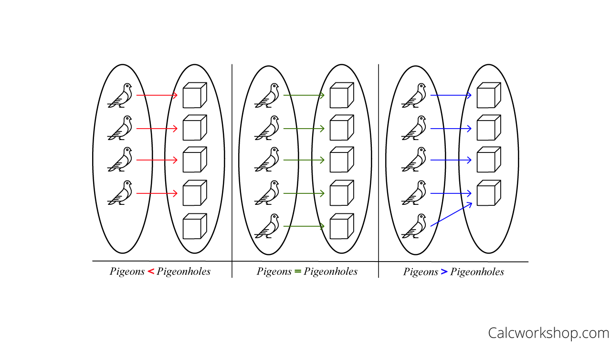

i. One to one
ii. Not one to one
codomain >= range
Every element in codomain should have only one correspoding y value.
f(x) = y
Example:
1) prove that f(x)=5x+2 is one to one
x1, x2 ∈ X
assume,
f(x1) = f(x2)
5x1 + 2 = 5x2 + 2
5x1 = 5x2
x1 = x2
∴ f(x) is one to one fuction
codomain == range
Example:
y = f(x)
y = 5x + 2
x = (y - 2)/ 5
now we try different values for y.
y=0, x=(-2)/5
y=1, x=(-1)/5
∴ f:ℝ -> ℝ
∴ function is surjective
- because for every x there is a corresponding y value
a function f: x -> y that is both one to one and onto.
If f is one-to-one and onto (bijection) then f-1 exists.
A function from one finite set to a smaller finite set cannot be one-to-one. There must be at least two elements in the domain that have the same image in the co-domain.
